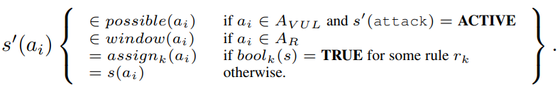
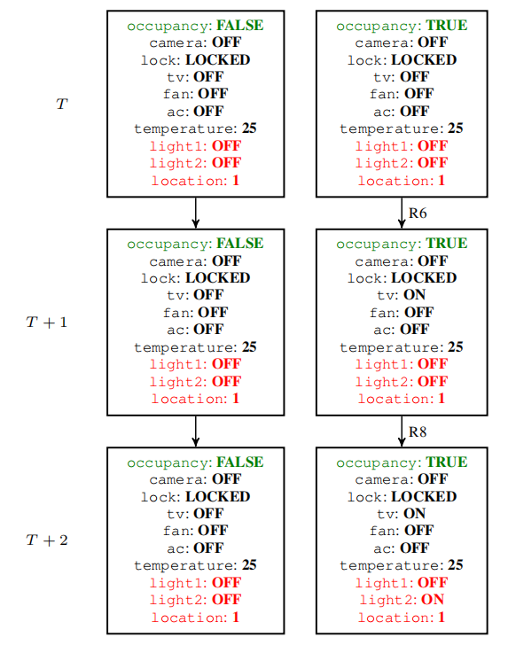

论文阅读-SafeChain
SafeChain
t - a，IFTTT等概念
定义
attack chain
Threat Model：文章阐述的两大问题
System Model：设备，规则和供应商
Desired Properties：false positive / false negative
建模
设备：每个设备拥有一个集合$A$ ，$possible(ai)$表示属性可能取值。
只读 $A_R$ sensors
读写 $A_{RW}$ actuators
rule: $r_i \equiv (bool_i, assign_i)$，如果$bool$为 $true$，$r_i$触发，$assign_i$ 定义规则对应动作。This function maps device attributes to values。
rule里的trigger中有若干个约束
两个规则是冲突的，$assign_i(a_k) \ne assign_j (a_k)$
环境：当前值预测
- 有约束的 $window(a_i) \subseteq possible(a_i)$
- 无约束的 occupancy sensor $window(a_i) = possible(a_i)$，即枚举
易受攻击的设备：可被对手修改 $A_{VUL}$
- 主动
- 被动
整个空间：$FSM \equiv (S, \rightarrow, I)$ [状态集，转移集合，初始状态集（只有一个元素，同时代表当前状态）]
每一个状态是一个N元组，元组各$a_i$组成各设备的所有属性， $s(a_i)$ 是属性的值
状态的改变：考虑对手，环境，规则

验证
Privilege escalation(security policy)：S-C 会将式子转化为 LTL 或者 CTL（但是论文没有具体介绍怎么处理）
Privacy leakage(privacy policy)：对属性打标签，分为private, public, other（用户并不介意）
进行定义：public 状态应该保持不变，使用乘积自动机进行转化，构造两个起始除了 private 状态以外都相同的自动机，看乘积自动机是否能到达 puclic 不相同的状态

优化
Grouping（考虑的是属性的值）
两个属性等价的定义，合并具有相同效果的状态，减少空间
Pruning（考虑的是属性本身）
建图，剪掉不相关的设备
修补（未解决）
实验，性能评估
其他思考方向
高频单词
| 英文 | 中文 |
|---|---|
| actuator | 致动（促动，激励，调节）器；传动（装置，机构） |
| compromise | 熟词生义（尤指因行为不很明智）使陷入危险，使受到怀疑 |
| confidential | 保密的;机密的;受信任的 |
| extrapolate | 推断;推知;外推 |
| implicitly | 含蓄地;暗中地;不明显地; |
| mitigation | 减轻;缓解 |
| perceive | 感知;认为;注意到;意识到; |
| precedence | 优先;优先权 |
| proliferation | 激增;涌现;增殖;大量的事物 |
| unauthorized | 未经许可(或批准)的 |
| usability | 合（可适）用性；有效性； |
| vulnerable | 脆弱的;(身体上或感情上)易受…伤害的 |
| redundant | 冗余的;不需要的 |
| spurious | 虚假的;伪造的 |